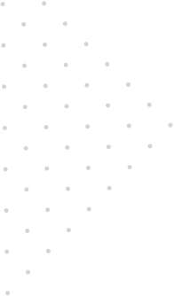

چه مواقعی باید از لندینگ پیج استفاده کرد؟
همه ما میدانیم وقتی میخواهیم یک کمپین دیجیتال اجرا کنیم متناسب با هدف کمپین و مخاطبان ن یاز به یک لندینگ پیج استاندارد داریم که نرخ تبدیل مناسبی داشته باشد. شما در لندین میتوانید براساس ساختار و چارچوبهای تعیین شده با هویت بصری و پکیجهای تصویرسازی آماده لندینگ پیج خود را بسازید. لندینگ پیج خود را میتوانید به راحتی به سایر سرویس ها از جمله گوگل آنالیتیکس، تک منیجر، رایچت، یکتانت متصل کنید تا بتوانید عملکرد بهتری را تجربه کنید.
چجوری بسازم